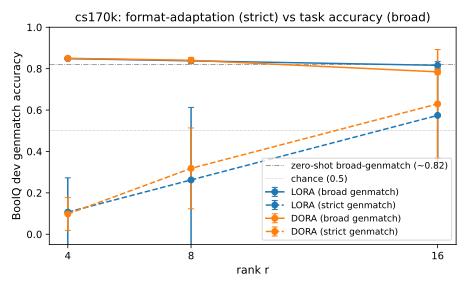
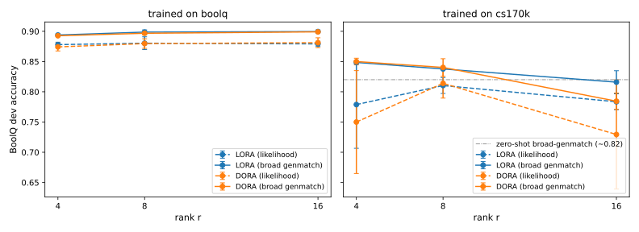
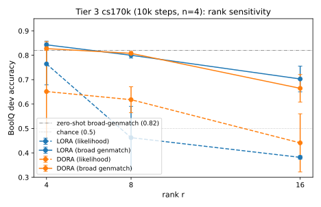

ELEN90088 SOML 2026 · Project 2 (Hands-on LLMs) · Mini-project
Reproducing DoRA
A regime-contrast study, with a post-hoc enrichment
The question
Does DoRA outperform LoRA more at low rank, as the paper claims?
Generalization study · Mistral-7B-Instruct (open-access)
Remilia · 28/29 May 2026 · Kwong Lee Dow Building 263
ELEN90088 SOML 2026 · Project 2 (Hands-on LLMs) · Mini-project
Reproducing DoRA
A Regime-Contrast Generalization Study, with a Post-Hoc Enrichment
Remilia · 28/29 May 2026 · Kwong Lee Dow Building 263
The question
Does DoRA outperform LoRA more at low rank, as the paper claims?
Frame: generalization study, not strict reproduction. Paper used LLaMA-base; we use Mistral-7B-Instruct — the open-access model from Parts 1–5. The contrast: does the paper's claim survive a different base model on a course-feasible regime budget?
Method
Two regimes × two metrics × three ranks.
Regimes
BoolQ (T2)
commonsense-170k (T2+T3)
Metrics
Yes/No likelihood
Generation exact-match
Scale
36 + 24 runs
7 seeds total
r ∈ {4, 8, 16}
All eval on BoolQ dev (3,270). Spartan H100 · ~140 GPU-h.
Method
Two training regimes, two evaluation metrics, three ranks × n seeds — both regimes evaluated on the same BoolQ dev set so the metrics line up.
Two training regimes
- Phase 1 — BoolQ. Per-task fine-tune on the full 9,427-example train split. Tier 2 only.
- Phase 2 —
commonsense_170k. Paper's multi-task mix (BoolQ + 7 other commonsense tasks). T2: step-capped at 2,500. T3: stretched to 10k steps (~31% of paper's ~32k), warmup proportionally scaled to 400.
Two evaluation metrics
- Likelihood — first-token Yes/No logprob ratio. Parser-independent internal probe.
- Generation exact-match (
genmatch) — greedy decode + parser + exact-match. Paper-style; sensitive to format collapse.
Both metrics evaluated on the full BoolQ dev set (3,270 examples) for every run.
Sweep totals
| Tier | Configuration | Runs | Seeds |
|---|---|---|---|
| 1 | Pilot LoRA-vs-DoRA rank sweep, BoolQ only | 6 | {42} (n=1) |
| 2 | 2 methods × 3 ranks × 3 seeds × 2 regimes + zero-shot | 37 | {42, 1, 2} |
| 3 | 2 methods × 3 ranks × 4 seeds × cs170k @ 10k | 24 | {114, 514, 1919, 810} — disjoint from T2 |
Compute
UniMelb Spartan HPC, gpu-h100 partition. Tier 2 ≈ 25 GPU-h. Tier 3 ≈ 114 GPU-h (~84 training + ~30 gen-eval), wall-time ≈ 14 h with 8–10 jobs in parallel. All training/eval reproducible via uv.lock-pinned deps + per-run config YAMLs committed alongside metrics.json.
The parser-fix discovery
Phase 2 first reading: one run scored worse than chance. So I dumped 20 generations.
| Run | r | What the model emits | Strict | Broad |
|---|---|---|---|---|
lora_r4_s1 |
4 | "the correct answer is yes/no" | 0.0003 | 0.846 |
dora_r16_s1 |
16 | "the correct answer is true/false" | 0.793 | 0.799 |
One metric, two effects. Strict parser = format adaptation. Broad parser = task accuracy. Separating them was the project's biggest analytical move.

Tier 2 — and the parser-fix discovery
Phase 1 (BoolQ) — null on task accuracy. 18 runs (LoRA/DoRA × r ∈ {4, 8, 16} × 3 seeds). Every DoRA−LoRA gap within seed std on both metrics. The per-task instruct-model regime is exactly where no DoRA edge is expected — this sets up Phase 2 as the designed contrast.
Phase 2 (cs170k) — first reading looked dramatic. Genmatch at r=4 was 0.0003 for one LoRA run — worse than chance on a binary task. DoRA showed an apparent +0.056 edge at r=8 and r=16. Looked like the paper's collapse pattern reproducing.
Diagnosis (eyeball generations via --debug-print N):
| Run | r | What the model emits (20 inspected) | Strict | Broad |
|---|---|---|---|---|
lora_r4_s1 |
4 | "the correct answer is yes/no" | 0.0003 | 0.846 |
dora_r16_s1 |
16 | "the correct answer is true/false" | 0.793 | 0.799 |
Low-rank models answered correctly in yes/no (the BoolQ eval prompt's instruction). High-rank models overrode the prompt with their cs170k training format (true/false). Our parser only matched true/false.
Insight. The cs170k genmatch metric was implicitly measuring two different things — task accuracy (broad parser, accepts either vocabulary) and format-adaptation strength (strict parser, only true/false). Broadening the parser disentangled them.
Tier 2 — null on task accuracy
Three findings under the broad parser.

- Task null at r ∈ {4, 8}; r=16 a 3-seed-consistent –3 pp
- Format hint, per-seed split — not significant evidence
- Inverse-rank 3-7 pp within-method — within noise at n=3
Verdict: the paper's "low-rank wins" doesn't replicate as task accuracy — yet.
Tier 2 conclusions
Null on task accuracy. Inverse-rank trend hinted. DoRA cost overhead firm.
Phase 2 (cs170k) cell means (n=3)
| r=4 | r=8 | r=16 | r=4 → r=16 | |
|---|---|---|---|---|
| Broad-parser genmatch — task accuracy | ||||
| LoRA | 0.849 ± 0.003 | 0.838 ± 0.001 | 0.816 ± 0.019 | −0.033 |
| DoRA | 0.850 ± 0.006 | 0.840 ± 0.014 | 0.784 ± 0.014 | −0.066 |
| DoRA − LoRA | +0.001 | +0.002 | −0.032 | — |
| Strict-parser genmatch — format-adaptation diagnostic | ||||
| LoRA | 0.107 ± 0.166 | 0.262 ± 0.350 | 0.574 ± 0.228 | +0.467 |
| DoRA | 0.098 ± 0.079 | 0.318 ± 0.195 | 0.630 ± 0.263 | +0.532 |
| DoRA − LoRA | −0.009 | +0.056 | +0.055 | — |
- DoRA − LoRA gap within seed std at r ∈ {4, 8}. At r=16 DoRA loses −0.032 — direction-consistent across all 3 seeds (every seed pair shows DoRA < LoRA), gap exceeds seed std; n=3 below formal significance.
- Strict-parser DoRA cell-mean edge: +0.056 at r=8 and r=16. Seed std wide (0.16–0.35); per-seed direction is split (DoRA wins 2 of 3 seeds at r=8, only 1 of 3 at r=16). A hint matching the paper's hypothesis on format adaptation — not significant evidence.
- Inverse-rank trend (hint). Broad genmatch decreases with rank. r=4 beats zero-shot (~0.82) by ~3 pp; at r=16 LoRA returns to zero-shot, DoRA falls ~4 pp below. Within-method drop: LoRA 3.3 pp, DoRA 6.6 pp. More PEFT capacity = more drift from BoolQ-optimal toward the broader cs170k distribution. Signal in the 3-7 pp range — within "could-be-noise" at n=3.
- Cost reconfirmed: DoRA ~3.3× wall-time, ~1.8× peak GPU memory at every rank, both regimes.
Verdict on the paper's claim: "DoRA wins more at low rank" does not replicate as a task-accuracy improvement in our setup. The directional hint is on format adaptation, below significance at n=3.
Open question coming out of T2: does the inverse-rank trend sharpen at longer training + more seeds, and does the strict-parser DoRA edge cross significance? That's why we ran T3.
Tier 3 — sharper signals
What changes at 4× training, n=4?
14–16 pp
inverse-rank gap within each method · ~2-4× the Tier 2 signal
More PEFT capacity + longer training = more drift from BoolQ-optimal toward the cs170k mix.

Tier 3 — sharper signals at 4× training
Same cs170k recipe, 10k steps, n=4 with new disjoint seeds {114, 514, 1919, 810} — T2 numbers stay verifiably untouched.
cs170k cell means — both metrics, n=4
| r=4 | r=8 | r=16 | r=4 → r=16 | |
|---|---|---|---|---|
| Broad-parser genmatch — the T3 task-accuracy metric | ||||
| LoRA | 0.843 ± 0.015 | 0.800 ± 0.011 | 0.703 ± 0.053 | −0.140 |
| DoRA | 0.827 ± 0.007 | 0.808 ± 0.008 | 0.665 ± 0.057 | −0.162 |
| Yes/No likelihood — at T3, a format-preservation probe | ||||
| LoRA | 0.764 ± 0.086 | 0.462 ± 0.128 | 0.382 ± 0.007 | −0.382 |
| DoRA | 0.651 ± 0.204 | 0.618 ± 0.053 | 0.441 ± 0.119 | −0.210 |
Three findings, in priority order
- The inverse-rank trend sharpens within-method on genmatch. T2's within-method drop (LoRA 3.3 pp, DoRA 6.6) grows to T3's (LoRA 14 pp, DoRA 16) — ~2-4× amplification per method. r=4 cells sit at-or-above zero-shot 0.82; r=16 cells drop into 0.66–0.71. The project's clearest scientific finding.
- Methodological diagnostic scaled up — likelihood collapsed, genmatch held. Likelihood drops −0.10 to −0.40 vs T2; broad genmatch loss only −0.006 to −0.12. The model isn't broken — it has fully switched to cs170k's true/false vocabulary, so the yes/no likelihood probe misreads correct answers as wrong. Genmatch is the T3 task-accuracy metric; likelihood at T3 is a format-preservation probe.
- DoRA vs LoRA — refined, not contradicted. Task-accuracy null replicates on genmatch (gap within seed std at every rank). On likelihood, DoRA r=8 shows a +0.16 edge over LoRA r=8, well outside DoRA's r=8 seed std (~0.05); 3 of 4 paired seeds favour DoRA by 0.18–0.25, LoRA wins the fourth (s114) by 0.02. Read with the matching genmatch gap (+0.008, basically zero): DoRA at r=8 preserves the yes/no answer format better than LoRA at r=8, but does not produce more correct answers.
Conclusions
1 · Task edge
doesn't replicate. 7 seeds, 2 budgets.
2 · Real edge
is in format preservation, not accuracy.
3 · Trend
inverse-rank sharpens at scale — 3-7 → 14-16 pp.
DoRA · 3.3× wall-time · 1.8× peak memory
"Null results aren't no results — and the inverse-rank trend that was below the noise floor at Tier 2 is the project's clearest scientific finding at Tier 3."
Conclusions
- "DoRA wins at low rank" does not replicate as a task-accuracy improvement in our Mistral-7B-Instruct + cs170k setup — neither at T2's 2,500-step budget nor at T3's 10k. Null supported by 7 seeds total (T2 n=3 + T3 n=4) across two training budgets.
- DoRA's measurable edge over LoRA is in format preservation, not task accuracy. +0.056 T2 strict-genmatch cell-mean (a hint — per-seed-split) → +0.16 T3 r=8 likelihood edge (outside seed std at n=4, with 3 of 4 seeds favouring DoRA). Direction matches the paper's hypothesis on format adaptation; evidence sharpens with statistical power and training budget but remains qualified.
- Inverse-rank trend on broad genmatch sharpens dramatically at scale — T2's within-method drop (LoRA 3.3 pp, DoRA 6.6) grows to T3's (LoRA 14 pp, DoRA 16). More PEFT capacity + longer training = more drift from BoolQ-optimal toward the broader cs170k mix.
Methodological lessons
- A single metric can hide multiple effects. The cs170k genmatch implicitly measured task accuracy + format-adaptation; separating them was the project's biggest analytical move.
- Eyeball your model outputs (
--debug-print) — resolves in 5 minutes what reasoning about metric definitions wouldn't. - T3's likelihood collapse looks catastrophic on the first metric and benign on the second; the format-vs-task split learned at T2 made T3 readable.
Cost reconfirmed across tiers
| LoRA | DoRA | Ratio | |
|---|---|---|---|
| Wall-time per cs170k run (T3) | ~98 min | ~318 min | 3.3× |
| Peak GPU memory | ~33 GB | ~60 GB | 1.8× |
| Trainable params (r=8) | 20.97 M | 22.35 M | +6.6% |
Caveats
n=4 still below conventional n=5+. 10k steps still 31% of paper's ~32k. Mistral-Instruct vs paper's LLaMA-base.
"Null results aren't no results — and the inverse-rank trend that was below the noise floor at Tier 2 is the project's clearest scientific finding at Tier 3."